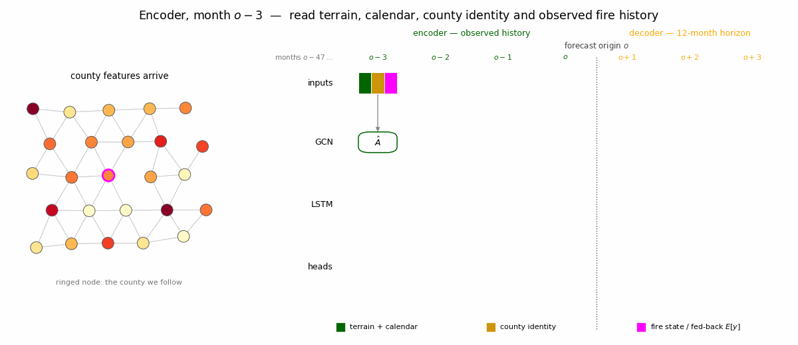

PyTorch
A county graph and a sequence model for twelve-month forecasts
1 Learn from neighboring histories
The neural model combines two structures in the county-month panel. A graph convolution pools information across neighboring counties. An LSTM reads the sequence of those pooled representations and produces twelve forecast steps. Each step returns the same hurdle Beta parameters used by the tree model.
The encoder reads 48 months ending at the forecast origin. Its observed response inputs are burned fraction and the indicator that the fraction is positive. The remaining inputs are fixed terrain, calendar harmonics, and learned county identity. The model has no informative land-cover category and uses no annual, epoch, or observed target-month environmental variables.
1.1 The spatial operation
Let \(A\) be the symmetric county adjacency matrix. Add self-loops so each county retains its own information, and normalize by the resulting degrees:
\[ \tilde A=A+I,\qquad \hat A=\tilde D^{-1/2}\tilde A\tilde D^{-1/2},\qquad \tilde D_{ii}=\sum_j\tilde A_{ij}. \]
A graph convolution applies
\[ Z^{(r+1)}=\sigma\!\left(\hat A Z^{(r)}W^{(r)}\right). \]
The matrix \(\hat A\) supplies a degree-weighted mixture of each county and its neighbors; \(W^{(r)}\) learns how to transform the mixture (Kipf and Welling 2017). With two layers a county can receive information from nodes two graph steps away. The adjacency is fixed geography, while the response signals being mixed are restricted to the observed history.
Normalization limits differences caused simply by the number of neighbors. It does not force learned representations to remain small: the fitted weights and nonlinearities still determine their scale. A sparse graph operator is built once and reused throughout training and prediction.
1.2 The temporal operation
For each encoder month, the model graph-convolves the county features and passes the resulting representation into an LSTM (Hochreiter and Schmidhuber 1997). Each county’s final hidden and cell states initialize the decoder.
The decoder then advances through twelve target months. It receives fixed terrain and the known target-month calendar, with its own previous expected response as feedback. It receives no observed response from the forecast window. Teacher forcing is disabled in this experiment, including during training.

2 Three constrained parameter heads
Each decoder state is mapped to a gate score, a positive mean, and a precision:
pi_logit = self.head_pi(state)
mu = _mu_link(self.head_mu(state), cfg.link, cfg.eps)
phi = cfg.phi_min + F.softplus(self.head_phi(state))
p_occ = gate_fire_prob(pi_logit, cfg.link)
e_y = p_occ * muThe gate score describes the probability of zero, so its sign convention is opposite to the reported occurrence probability. With a logit link, \(p_{\mathrm{occ}}=\operatorname{logistic}(-\texttt{pi\_logit})\). The mean link maps into \((0,1)\) and the precision is positive.
The mean-head epsilon is a parameter constraint. It does not clamp positive responses in the likelihood. Exact zeros contribute only the gate term, and positive observations contribute their observed Beta log-density.
The implied positive-response shapes are \(\alpha=\mu\phi\) and \(\beta=(1-\mu)\phi\). Both concentrations below one give a U-shaped Beta; \(\alpha<1\) also allows a density that rises toward zero. A density near zero does not replace the separate probability mass at exactly zero.
2.1 What mean feedback means
The next decoder step receives
previous_response = (p_occ * mu).detach()Detaching stops gradients through this numeric feedback input. Gradients still flow through the recurrent hidden state and later-step losses.
This is a deterministic mean-feedback path. The reported \(p_{\mathrm{occ}}\), \(\mu\), and \(p_{\mathrm{occ}}\mu\) are plug-in predictions along that path. For a nonlinear decoder, passing an expected response forward does not integrate over all possible earlier responses: \(E[f(Y)]\) need not equal \(f(E[Y])\). Its later-horizon distributions therefore need this explicit qualification.
3 Select the fit without validation feedback
Feature scaling is learned on training data. Target windows remain wholly inside their assigned split, and the encoder never extends beyond its origin. Later rolling origins use only the response history that has become observable by then.
The search chooses architecture and optimizer settings using test NLL. Early stopping also monitors test NLL, and the selected checkpoint is restored before prediction. Test is consequently development data. Validation does not select the architecture, training epoch, or checkpoint in this run.
This bounded search supplies the selected configuration and the predictions reported in the tutorial.
Only completed fits with finite test NLL are eligible for selection.
The completed search contains 18 trials, of which 6 completed with finite test NLL. Trial 11 supplied the selected fit.
The selected network uses 2 graph layer(s) of width 64, 1 LSTM layer(s) of width 64, and 2 calendar harmonic pair(s).
The result manifest records the complete configuration, selection evidence, and source hashes.
The Comparison chapter brings together both models’ train/test scores, residual diagnostics, training G1 STACF heatmaps, and occurrence ROC and precision–recall curves. All scores are recomputed from saved parameters after checking complete forecast keys and outcomes. Validation results appear afterwards in Discussion.